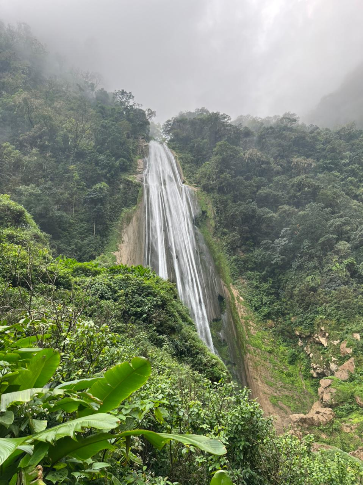
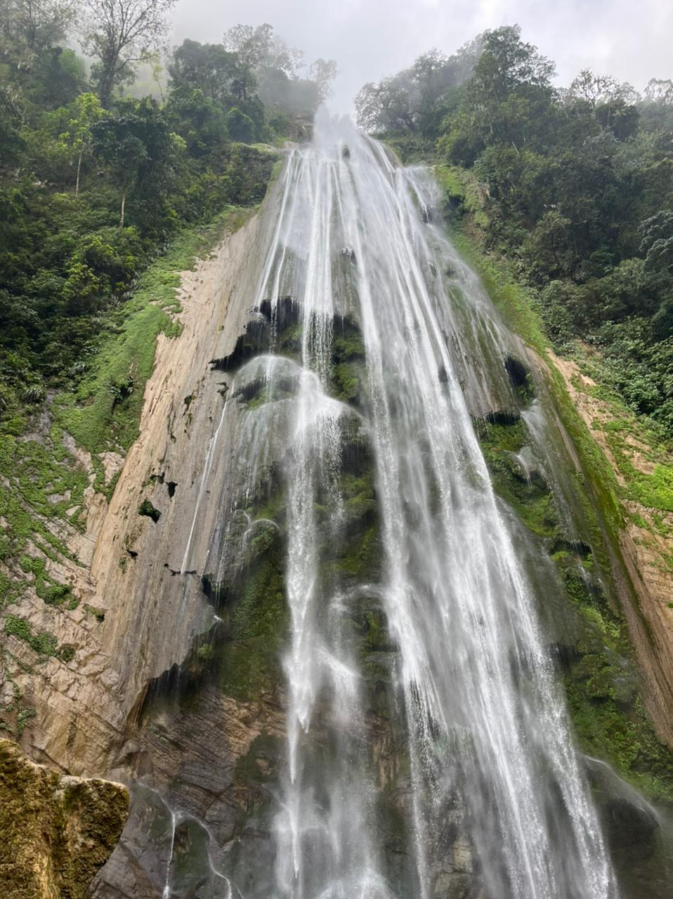
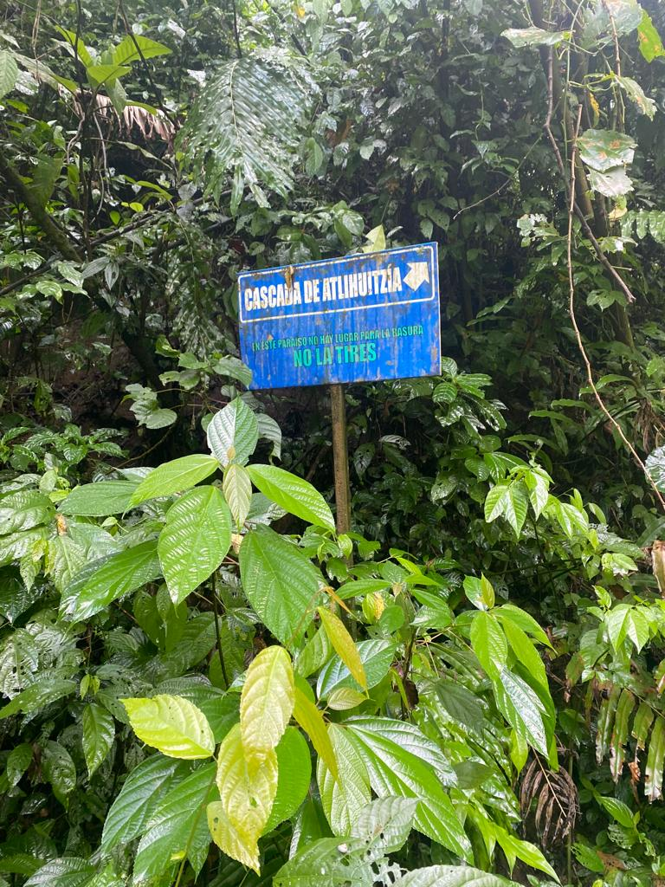
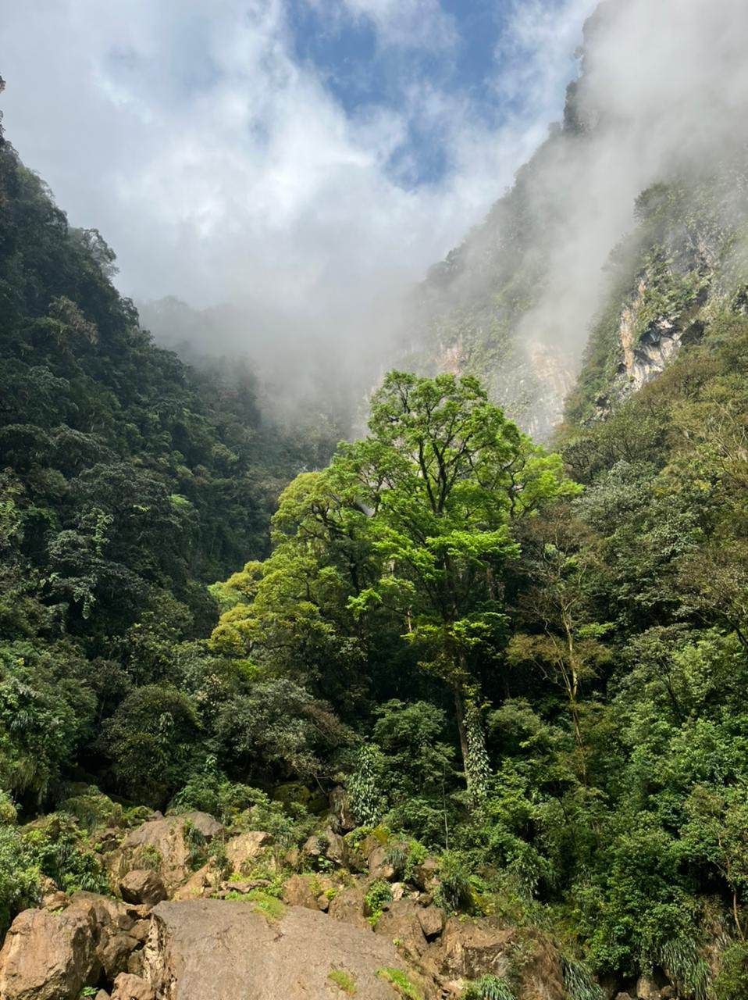
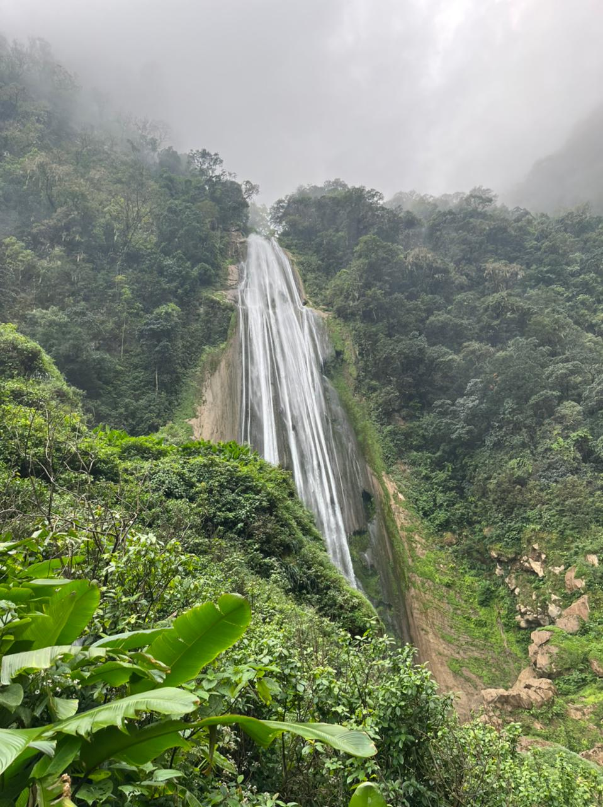
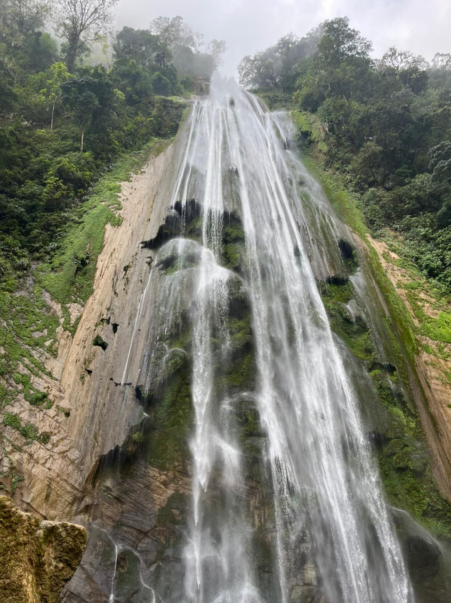
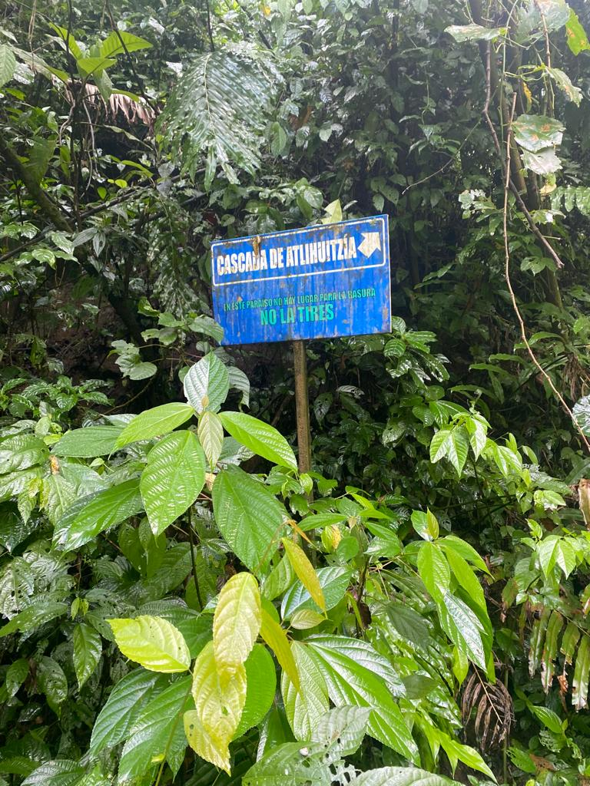
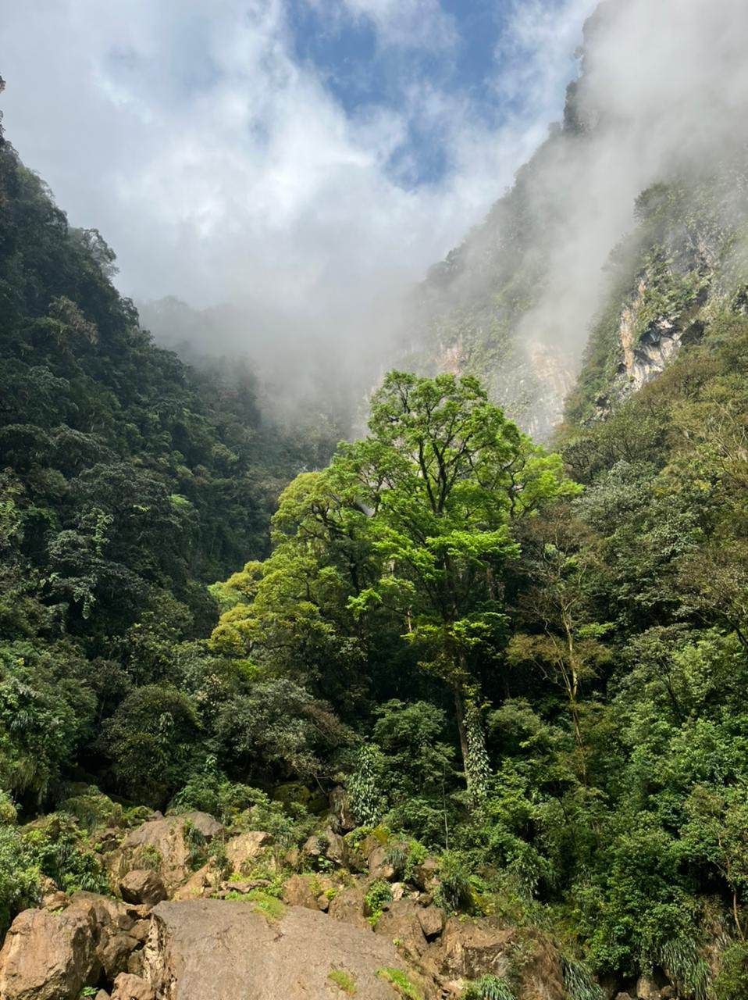

Waterfalls of Atlahuitzia
On the Atlahuitzia route, a waterfall is known on the way from a basin called the precipice where it is formed by the resurgence of water from an underground river system, this is admired from the banks of the dirt road.